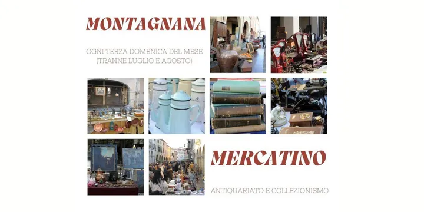

da dom 19 apr a dom 20 dic
Mercatino dell'Antiquariato e del collezionismo
Fatta eccezione per i mesi più caldi di luglio e agosto, ogni terza domenica del mese , dal mattino al tramonto, Montagnana diventa una tappa imprescindibile per tutti gli amanti dell’ antiquariato e del vintage , e per gli appassionati di collezionismo e oggettistica di pregio.…
 Indicazioni
Indicazioni
- Costi e prenotazioni
- Costo non indicato · Prenotazione non indicata
- Programma
- Programma da verificare. Apri la fonte ufficiale per orari e possibili aggiornamenti.
- In caso di maltempo
- Nessuna indicazione specifica pubblicata.
- Note
- Acquisito automaticamente dalla fonte.
L’EVENTO
Descrizione completa
Fatta eccezione per i mesi più caldi di luglio e agosto, ogni terza domenica del mese , dal mattino al tramonto, Montagnana diventa una tappa imprescindibile per tutti gli amanti dell’ antiquariato e del vintage , e per gli appassionati di collezionismo e oggettistica di pregio. Da Castel San Zeno alla Rocca degli Alberi, lungo la via principale che attraversa il borgo medievale, circa 90 espositori mettono in mostra le loro mercanzie consentendo a chi è a caccia di rarità, oggetti di arredo, libri o gioielli, di scovare i pezzi più rari e preziosi tra quelli in esposizione nelle numerose bancarelle, passeggiando all’ombra dei palazzi nobiliari che abbelliscono il centro storico. Un’immersione completa nella bellezza e nell’arte del passato. Piazza Vittorio Emanuele II poi fa da cornice a un vivace mercatino che propone invece oggetti di artigianato e prodotti enogastronomici di stagione , e ospita inoltre uno stand gastronomico per accontentare anche gli amanti del buon cibo. Per trascorrere a Montagnana un’intera giornata si può dedicarsi poi alla visita delle bellezze architettoniche del centro storico, passeggiando sotto alla lunga cinta muraria medievale, salendo fino alla sommità del Mastio di Ezzelino, partecipando alla visita guidata del Museo Civico o della città, e ammirando gli interni del meraviglioso Duomo di S. Maria Assunta.
IL PROGRAMMA
Programma e orari
Appuntamenti raccolti dalle fonti elencate. Dove manca un orario, non è ancora disponibile in questa scheda.
Programma pubblicato
- 2026-04-19 — 2026-04-19 ·
- 2026-05-17 — 2026-05-17 ·
- 2026-06-21 — 2026-06-21 ·
- 2026-09-20 — 2026-09-20 ·
- 2026-10-18 — 2026-10-18 ·
- 2026-11-15 — 2026-11-15 ·
- 2026-12-20 — 2026-12-20 ·
INFORMAZIONI UTILI
Prima di partire
- Controllare la fonte prima di partire.
ORGANIZZAZIONE